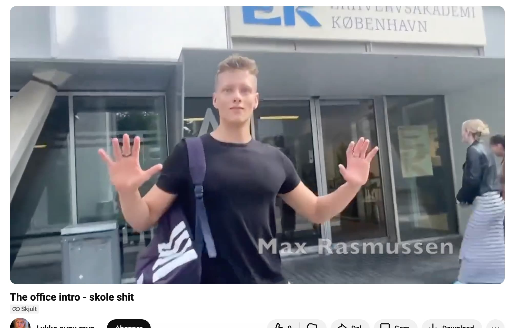

Tidligere Temaer
Tema 1 - Introuge
 Tema 01 - Introuge Overordnet temabeskrivelse: I dette tema blev vi introduceret helt konkret for hvad Multimediedesigner-uddannelsen indebærer. Vi fik et par oplæg fra tidligere fra multimediedesign studerende, for at få indsigt i hvad en multimediedesigner kunne ende op med at arbejde med, hvis vi gennemførte uddannelsen. Hvad vi lærte om opsummeret: ● Hvad dækker 'multimediedesign' over ● Hvilke fagområder er en del af uddannelsen ● Hvilke professionelle roller har en multimediedesigner og hvilke virksomheder vil en multimediedesigner typisk arbejde for ● Du kommer også til at købe, installere og prøve centrale værktøjer for dit første semester Derudover tager vi de første skridt ind i det konkrete arbejde med at producere digitalt indhold og design. Kort resume af opgaver: Vi lærte hinanden at kende ved at lave præsentations-kort om hinanden i klassen, med lidt info om os alle. Vi lavede også en lille video sammen, baseret på introer til forskellige serier. Vores video var baseret på “The office”. Udover det lavede vi også vores første test-side, for at sikre alle lærte at bruge github til at hoste websites. Hvad jeg fik ud af det: Jeg lærte en del om selve uddannelsen, og hvad jeg kan gøre fremadrettet, hvis jeg fuldfører den. Derudover lærte jeg om de fagområder uddannelsen fokuserer på, og hvilke forskellige karrierer det kan føre til. Derudover begyndte vi på html og github, hvor jeg allerede havde lidt erfaring, men jeg havde aldrig prøvet at hoste en side på github, så det var brugbart. De forskellige links til opgaver: Præsentationskort (lav til link) Uge-opgave (video) Test site PræsentationsKort: Præsentationskort om en klassekammerat. Link til kortene: https://www.figma.com/board/M7HNppwoUZ47StgoJlswz3/Pr%C3%A6sentationskort-E25?node-id=0-1&p=f&t=emMyKE2OtHOD3fvK-0 Link til afleveringen: https://ek.itslearning.com/ContentArea/ContentArea.aspx?LocationID=7301&LocationType=1&ElementID=1403383 Uge-opgave (intro video): Vi skulle lave en intro inspireret af en serie. Min gruppe valgte the office. Link til aflevering: https://ek.itslearning.com/ContentArea/ContentArea.aspx?LocationID=7301&LocationType=1&ElementID=1403384 Link til videoen: https://www.youtube.com/watch?v=4qW2WWzaNPk&time_continue=0&source_ve_path=MjM4NTE&embeds_referring_euri=https%3A%2F%2Foembeditslearning.com%2F Test-side: Vi skulle lave vores første test side for at lære hvordan vi hoster dem ved hjælp af github pages. Linket til aflevering: https://ek.itslearning.com/ContentArea/ContentArea.aspx?LocationID=7301&LocationType=1&ElementID=1403382 Siden: https://max-rasmussen.github.io/test1/Second Image
Different layout, links, images, etc.
Third Image

Fourth Image
Even more content.
Fifth Image
Final content page.